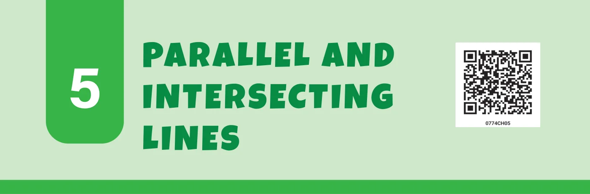
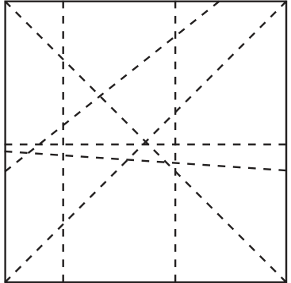
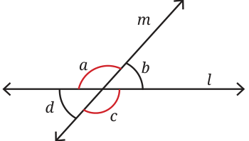

Take a piece of square paper and fold it in different ways. Now, on the creases formed by the folds, draw lines using a pencil and a scale. You will notice different lines on the paper. Take any pair of lines and observe their relationship with each other. Do they meet? If they do not meet within the paper, do you think they would meet if they were extended beyond the paper?

In this chapter, we will explore the relationship between lines on a plane surface. The table top, your piece of paper, the blackboard, and the bulletin board are all examples of plane surfaces.
Let us observe a pair of lines that meet each other. You will notice that they meet at a point. When a pair of lines meet each other at a point on a plane surface, we say that the lines intersect each other. Let us observe what happens when two lines intersect.
How many angles do they form?
In Fig. 5.2, where line l intersects line m, we can see that four angles are formed.

Can two straight lines intersect at more than one point?
Activity 1
Draw two lines on a plain sheet of paper so that they intersect. Measure the four angles formed with a protractor. Draw four such pairs of intersecting lines and measure the angles formed at the points of intersection.
What patterns do you observe among these angles?
In Fig. 5.2, if \(\angle a\) is \(120°\), can you figure out the measurements of \(\angle b\), \(\angle c\) and \(\angle d\), without drawing and measuring them?
We know that \(\angle a\) and \(\angle b\) together measure \(180°\), because when they are combined, they form a straight angle which measures \(180°\). So, if \(\angle a\) is \(120°\), then \(\angle b\) must be \(60°\).
Similarly, \(\angle b\) and \(\angle c\) together measure \(180°\). So, if \(\angle b\) is \(60°\), then \(\angle c\) must be \(120°\). And \(\angle c\) and \(\angle d\) together measure \(180°\). So, if \(\angle c\) is \(120°\), then \(\angle d\) must be \(60°\).
Therefore, in Fig. 5.2, \(\angle a\) and \(\angle c\) measure \(120°\), and \(\angle b\) and \(\angle d\) measure \(60°\).
When two lines intersect each other and form four angles, labelled a, b, c and d, as in Fig. 5.2, then \(\angle a\) and \(\angle c\) are equal, and \(\angle b\) and \(\angle d\) are equal!
Is this always true for any pair of intersecting lines?
Check this for different measures of \(\angle a\). Using these measurements, can you reason whether this property holds true for any measure of \(\angle a\)?
We can generalise our reasoning for Fig. 5.2, without assuming the values of \(\angle a\).
Since straight angles measure \(180°\), we must have \(\angle a + \angle b = \angle a + \angle d = 180°\). Hence, \(\angle b\) and \(\angle d\) are always equal. Similarly, \(\angle b + \angle a = \angle b + \angle c = 180°\), so \(\angle a\) and \(\angle c\) must be equal.
Adjacent angles, like \(\angle a\) and \(\angle b\), formed by two lines intersecting each other, are called linear pairs. Linear pairs always add up to \(180°\).
Opposite angles, like \(\angle b\) and \(\angle d\), formed by two lines intersecting each other, are called vertically opposite angles. Vertically opposite angles are always equal to each other.
From the above reasoning, we conclude that whenever two lines intersect, vertically opposite angles are equal. Such a justification is called a proof in mathematics.